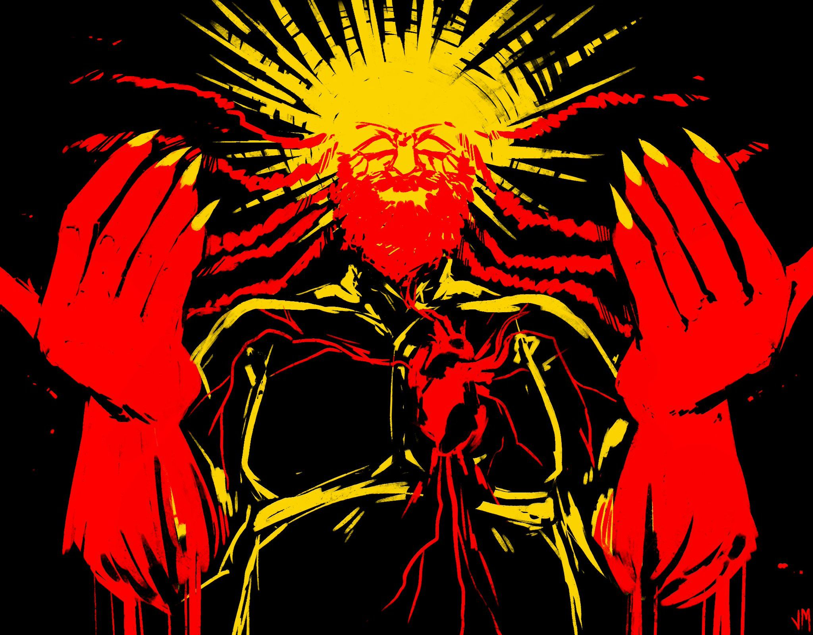
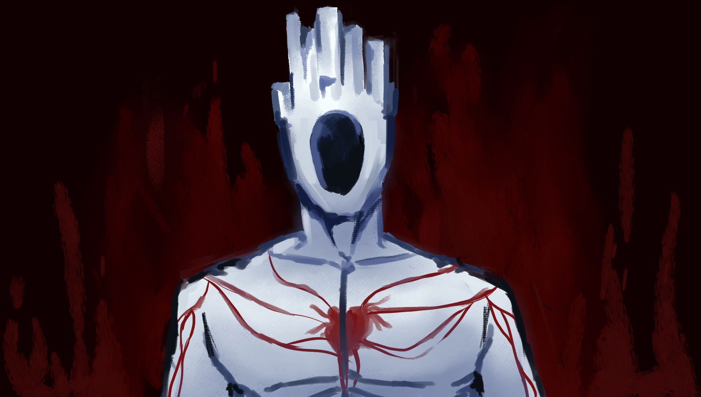

"If only we knew the suffering that would befall us next..."
"Your choice is made. As the righteous hand of The Father, I shall rend you apart, and you will become inanimate once more."
"This prison, to hold... ME?!"
"Forgive me my children, for I have failed to bring you salvation from this cold, dark world."
Gabriel is an archangel of GOD.
He appears twice in the game. In the first phase he possesses the father's light which THE MACHINE takes from him making him bleed. In the secon phase he is in rage wanting to regain the father's light in which he fails but which makes him feel free.
More @ Fandom Wiki.
TopSisyphus Prime is the king of GREED layer.
Unlike Gabriel he appears only once, V1 finds him in the greed layer where he has his second chance to rise, however he fails to do so.
More @ Fandom Wiki.
TopMinos Prime is the king of the LUST layer.
Like Gabriel he "appears twice", first "phase" is fighting his courpse from which V1 frees him giving him a chance to rise again, he dosen't.
More @ Fandom Wiki.
Top